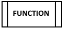

Função com Parametros |
 |

Os parâmetros de uma função funcionam como variáveis locais da função e servem para flexibilizar a sua utilidade.
Sintaxe
Funcao
funcao <Tipo> <nome> ([= <parametro>,...,<parametro>])
<instruçoes>
fim <nome>
<TYPE> – Tipo de dados (inteiro | real | logico | texto| vazio)
o vazio significa que nao calcula nada
<nome> – Nome da variável sujeita às seguintes regras
o Não pode ser uma palavra reservada ou de outra função
o Tem de começar por uma letra (a-z ; A-Z)
o Pode conter dígitos (0-9)
o Deve ser significativo daquilo que armazena
[<parametros>] - Parâmetros da função (Opcional)
o <Tipo> Tipo de dados do parâmetro
o <Var>Nome do parâmetros
Exemplos
EXEMPLO 1
Dizer Olá com Cálculo Algoritmo que imprime na consola os Olá mundo através de uma função
inicio Programa principal
definir texto user ="M@nso"
executar dizOla(user)
fim Programa principal
funcao vazio dizOla(texto nome)
escrever "Ola "+nome
fim dizOla
Programas
 Exemplo 1 – Função com Parametros
Exemplo 1 – Função com Parametros